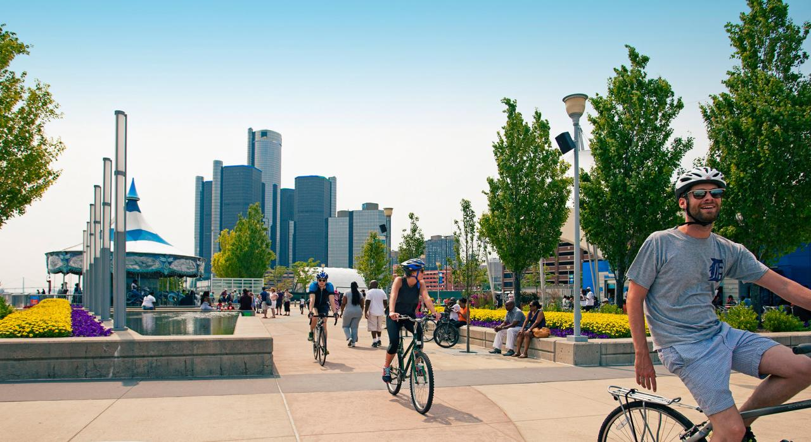
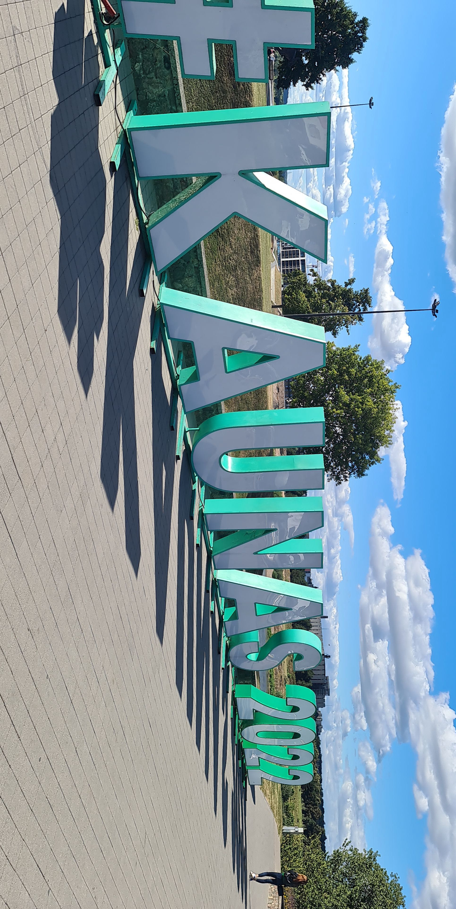
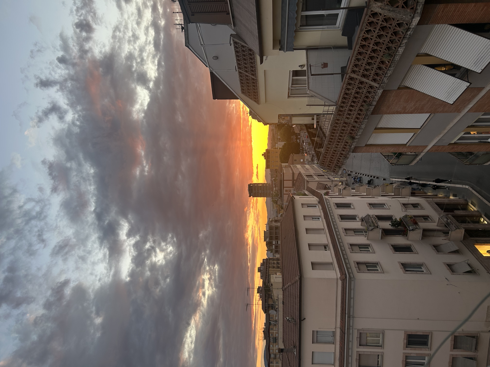

Travels
My experiences abroad (Erasmus, internships, private trips) and what I learned from them.
Detroit, USA 
2010–2013 • Lived abroad
- Living in Detroit from 2010 to 2013 gave me early exposure to American culture and school life. It strengthened my English fluency, openness, and ability to adapt quickly to new environments from a young age.
- Languages: English

Mexico City, Mexico 
2013–2016 • Lived abroad
- Living in Mexico City from 2013 to 2016 deepened my cultural sensitivity and flexibility by integrating into a new country and language. I developed strong interpersonal skills and became confident using Spanish in daily life.
- Languages: English & Spanish

Kaunas, Lithuania 
2022–2023 • ERASMUS at the KTU University
- My one-year Erasmus in Lithuania improved my adaptability, independence, and cross-cultural communication. Living and studying fully in English strengthened my language skills and gave me confidence in international environments.
- Languages: English and Lithuanian

Terni, Italy 
04/2025–08/2025 • Internship Abroad
- My internship in Italy strengthened my teamwork, communication, and cultural adaptability. Working in a new environment improved my problem-solving skills, autonomy, and ability to collaborate effectively with diverse colleagues. It also enhanced my confidence in professional human interactions.
- Languages: English & Italian
